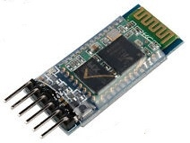
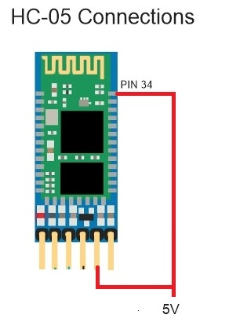

<h1>HC05<h1>

This device is available on ebay for about $3.

It can be a master or a slave, however one pin needs to be pulled high to put it in configuration mode (for pairing).
Note: When this line is pulled high it will blink every 2 seconds.



Once this pin is pulled high the HC-05 will accept special commands.  <br>
Note: In AT mode use a baud rate of 38400<br>
Note: It should respond "OK" to all commands.<br>
<ul>
<li>AT+NAME=NewName</li>
<li>AT+PSWD=1234</li>
<li>AT+RMAAD (clear any previously paired devices)</li>
<li>AT+ROLE=1 (puts the HC-05 in Master Mode)</li>
<li>AT+RESET (resets the HC-05, this may disconnect Terra Term)</li>
<li>AT+CMODE=0 (allow connection to any device)</li>
<li>AT+INQM=0,5,9 (search for other bluetooth devices for 9 seconds)</li>
<li>AT+INIT (initiate SPP profile)</li>
<li>AT+INQ (search for other bluetooth devices)</li>
<li>AT+INQ returns 3 values, the first is the address and this is the value we need. The second value is the class of the device and the third value is the signal strength (RSSI).</li>
<li>AT+INQ will only work if the HC-05 is in Master Mode and after a AT+INIT command.</li>
<li>AT+RNAME?addr1,addr2,addr3 (Show the name of the device)</li>
<li>AT+PAIR=addr1,addr2,addr3,9 (Try to pair to other device for nine seconds)</li>
<li>AT+BIND=addr1,addr2,addr3 (Bind to other device)</li>
<li>AT+CMODE=1 (Only connect to paired devices)</li>
<li>AT+LINK=addr1,addr2,addr3 (Link to other device)</li>
</ul>

Now that the HC05 is paired and configured, pin 34 should be disconnected from the 5V, and the led should blink faster 